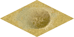

Crater
If compared, Martian atmosphere is only a fraction of Earth's atmosphere
making it unable to stop meteors from hitting the planet surface, as a
result there are hundreds of thousands of craters on Mars larger
than 1 km.
Sometimes these craters provide good opportunities
for mining operations as they expose lower layers making them easier
to drill. These mines will produce moderate amounts of elements
like magnesium, silica or minerals. Cratered terrain is not suitable
for agriculture.
In battle, it will provide some advantages to defender.
Improvements:

| Movement cost |
2 |
| Defence percentage |
20 |
| Resource |
Production |
| Food |
3 |
| Stone |
4 |
| Magnesium |
2 |
| Silica |
3 |